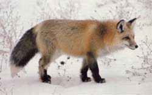
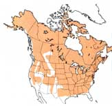
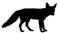

Please let me introduce you to a red-haired stranger.
If you live in any of the lower 48 states, Canada or Alaska, at least one of the five North American fox species - red, gray, kit, swift or arctic - is your neighbor. And if you reside in Colorado, Utah, Texas or New Mexico, you have four of our continent's five smallest canids as fellow residents - whether you know it or not. (And you can't be blamed if you don't , since foxes make it their business to see that we don't see them.)
Of the five species, the one with the red hair -Vulpes vulpes , the sly antagonist of Aesopian fables, the trickster Reynard of French-Canadian folklore - is far and away the most plentiful and wide-ranging. In short, it's the fox you're most likely to meet someday. To enrich that encounter, allow me I to introduce you.
By the calendar on the wall, the red fox has made its home in North America for one heck of along time. But in the long view, the little dog is a relative newcomer. Like most other creatures that didn't evolve here but were present when Columbus's ship came in, V. vulpes hiked over from Asia in relatively recent geologic times, crossing on God's own drawbridge, that ephemeral ice age isthmus, the Bering-Chukchi Platform.
It's no mere coincidence, then, that North American and Eurasian red foxes are near-twins (the European version runs a bit larger and evidences minor microchromosomal variances); they haven't been separated long enough to have evolved significant morphological differences. Matter of fact, though the two were long categorized as separate species simply because they inhabit different continents, wildlife taxonomists now lump them under a shared name, V. vulpes (Latin for "fox fox").
And thereupon hangs a tale.
Convinced that native American red foxes were both too few and too plebian to provide their high-bred horses and hounds with proper sport, aristocratic European settlers imported, beginning in 1750, substantial numbers of Old World reds to Virginia, Pennsylvania and New England. But the immigrant foxes proved less aloof than their importers and promptly mingled genes with the natives, producing - for a while, at least - a hybrid species. This hybridization, in turn, long confused all attempts at drawing definitive distinctions between the North American and European species.
Today, most authorities agree that the transplants were too restricted in both area and number, and took place too long ago, to have carried through genetically to the present. Thus, while European and American red foxes are closely related, and though a Euro-American hybrid undoubtedly did exist a couple of centuries ago in a few northeastern states, time has probably filtered any Old World genes from the native pool, leaving our fox a true red, white, yellow, gray and brown American - the hues of an adult red fox's many-colored coat.
And occasionally, other shades as well.
On the road last spring, my wife and I had just turned into the Jenny Lake Campground in Teton National Park - deserted so early in the season save for a young man sitting in the sun out front of his tent, reading Tolstoy's What Is Art ? - when a large, winter-pelted fox trotted across the campground lane just ahead of us.
Now, fox sightings are no great oddity thereabouts: Teton is known worldwide for its fecundity of wildlife. What surprised me was the paint job on this particular model . . . black underfur salted over with white-tipped guard hairs to create a distinguished-looking, grizzled-silver pelage.
"Silver fox!" I exclaimed in the excitement of the moment, reconfirming my quick grasp of the obvious - a grasp that frequently prompts people to look at me funny and say things like "right."
"Right," Carolyn said, looking at me funny. "So tell me about it."
"Well," I began, "the silver fox is, uh . . . what say we stake out a campsite before this place fills up?"
Two weeks and a thousand miles down the road, after sneaking an evening at the college library back home, I finally "remembered" to explain to Carolyn about the silver fox.
The silver fox, I explained, is nothing more than one of three rare color variations, or phases, of the common red fox. The second is melano, or pure black. And the third, the "cross" fox, has the normal red-fox color mix, but is distinguished by two wide, dark brown stripes - one running the length of its back and another across its shoulders - forming the cross from which cometh its name. These variant phases occur randomly anywhere V. vulpes ranges, but are more common in the north . . . in particular on northern fox farms, where all three variations - especially the silvers - are bred in captivity for their valuable pelts.
Your typical red fox - no matter its color - measures about three feet overall, including more than a foot of luxuriant tail; stands 14 to 16 inches at the shoulders; and weighs a mere eight or 10 pounds with 12 about tops these days. (Turn-of-the-century naturalist Ernest Thompson Seton, in his classic Lives of Game Animals , reports a record American red fox weight of 16 3/4 pounds - a male raised on a game farm - and cites a Welsh specimen that went an astonishing 29 pounds. Near as I can determine, both records still stand.)
Although foxes don't mate for life, neither are they particularly promiscuous. Each winter, the vixen (female) prepares a nursery den, often enlarging a woodchuck burrow in a sandy hillside or renovating a fox den from a previous season. When she's set, she'll send out a scent invitation, then choose a spouse from among the numerous dog foxes (males) that come to call.
Once mated, a fox pair will remain together, sharing the joys and labors of parenthood, until the following autumn. Next season, the same vixen and dog may get together again. Or they may not.
Seven to eight weeks after the honeymoon, the vixen will give birth - usually in late March or early April - to around half-a-dozen quarter-pound pups. Red fox kinder resemble fuzzy lumps of charcoal at birth, save for their white-tipped tails. (This marking is unique among North American canids, and remains with red foxes throughout their lives, no matter what color they become when mature.) Born deaf and blind, the pups will remain within the womblike protection of the den for their first few weeks, attended constantly by Mama.
Outside, Papa plays the role of sole family breadwinner during this critical time, hunting almost continuously to feed himself and his nursery-bound mate-for whom he leaves mousy little love offerings at the doorstep to the den.
After about a month, the pups - their fur now faded to sandy-gray to better match the earth around the den opening - will begin surfacing from their subterranean nursery. Early forays into the great outdoors are brief and tentative, but will gradually lengthen to several hours at a stretch. These first few weeks under the sun are the most hazardous in the young foxes' lives, since they look just like lunch to a variety of predators - notably cats, coyotes, great horned owls and golden eagles.
About 40 days after giving birth, Mama Red begins weaning her litter and providing them with solid food. At about 10 weeks, the pups begin evidencing adolescent curiosity and grow hot to trot along with their parents on the nightly hunts. By autumn - approximately six months from their birth - the pups, though not fully grown, will have taken on their adult coloration and be capable of fending for themselves. Soon they'll wander away from home to stake out turfs of their own.
That's the way a fox's youth should unfold. But life is tough out there in the natural world - survival of the fittest, you know - and more than half of every litter of fox pups will succumb to the elements, disease, predators or men with guns, traps and poisoned baits before reaching maturity. For those making it to adulthood, the average life span - if not foreshortened by human interference - is three to seven seasons.
Like all canids, foxes mark the boundaries of their territories with urine, also relying on scent to broadcast other important messages ("Whyuncha come on down to my den sometime, big boy?"). But the primary means of red fox communication is vocal, with a language that includes yaps, barks, mews, whines, growls, churrs, yurrs, gurrs, squalls and screams. Naturalist E.T. Seton, though a great admirer of the red fox, nonetheless described the little beast's alarm scream as "probably the most sinister, unearthly wild-animal note that can be heard in North America."
In light of this "unearthly" quality of the fox's scream,
it seems safe to postulate that a good many of the eerie nocturnal cries traditionally attributed to panthers by nervous campers and countryfolk in fact originate in the narrow throats of pint-sized canines.
To me, the most intriguing characteristic of the red fox is the way it conducts business. Whereas wolves, coyotes and most other dogs evolved as pack animals - group hunters, practitioners of the cooperative chase and the open pursuit - the fox is more akin to the cats in its social and hunting habits.
Except during mating and pup season, the red fox prefers to live and hunt alone. And rather than running its prey to ground after the fashion of its larger relatives the coyote and wolf, V. vulpes relies on catlike stealth, prowling slowly and quietly along established huntways, using its sharp senses to locate prey from a distance without itself being noticed, then stalking close and jumping its food by surprise - thus avoiding (or at least minimizing) garish chase scenes.
Canadian naturalist J. David Henry has spent years observing the hunting techniques of red foxes in northern Saskatchewan's 1,500-square-mile Prince Albert National Park. Writing in Natural History, Henry postulates that the red fox has two good reasons for hunting alone: 1) its primary prey are meadow mice - hardly meat enough there to share among a whole platoon of hungry hunters; and 2) such a tiny quarry is more easily captured by a pussyfooting loner than by a boisterous pack of brutes.
Henry's observations have shown that the red fox hunts four distinct categories of prey and - this is the sly part - has evolved a specialized technique for taking each.
The smallest red fox prey are bugs, which Reynard hunts in a cavalier fashion, sauntering along until he spots a fat juicy beetle or whatnot, then strolling over, smacking a paw down on the star-crossed little beastie . . . and chomp .
Next up in size - and most important to the red's day-to-day survival - are mice, voles and similar minirodents. These the fox hunts slowly and carefully. After detecting a mouse from a distance and stalking to within pouncing range, the hunter crouches to compress its springs, then uncoils in a leap calculated to land its front paws atop the furry victual.
The third classification is an unlikely pairing: birds and squirrels (lumped together because they're of a size and hunted similarly). According to Henry, the red fox considers these as "targets of opportunity," to be taken as they come rather than hunted deliberately. Upon fortuitously spotting a groundfeeding bird or squirrel, the little red hunter begins an impromptu stalk, moving only when the quarry is looking away, then charges the final distance in a "crouched, dashing run." In most instances, the fox will attempt to grab a bird or squirrel in its mouth rather than risk pinning it with its paws.
Henry's final class of fox prey - and the largest animals these smallest of the wild canids will normally tackle - consists of rabbits and hares. When hunting these alert quarry, the fox is rarely fortunate enough to sneak within pouncing range undetected. More often, the approaching canine flushes the watchful lagomorph and is forced to pursue it in a wild, zigzag chase through the densest brush the bunny can find. If and when the fox closes on its prey, it will attempt to bring it to ground by snapping at the hindermost portions. With the quarry down, the diner anchors its dinner with its paws and administers the coup de grâce by sinking its needlelike teeth into the victim's neck or head.
Cruel?
No. Merely necessary.
We upright predators do most of our hunting these days at the supermarket . . . bagging meat that's killed, cut, wrapped, labeled and no longer recognizable (if you don't think about it too hard) as a gentle creature with trusting eyes. The fox must earn its dinner in a more honest fashion.
Inevitably, humans and foxes will occasionally find themselves in competition for the same piece of meat. When prompted by hard times or tempted with easy pickings, old Reynard can be not only an adept hen heister, but a talented duck buster as well - as noted (albeit philosophically) by avocational duckman E.T. Seton:
"Many a duck have they [red foxes] taken from my stock, but I gladly forgive them. It is worth more to me to hear that squalling night-cry under my window in the darkness than to be the over-fed owner of many fat, stupid table ducks."
He's right to forgive the raiders, you know. It's hardly fair, or logical, to take umbrage at a natural-born hunter for snatching unprotected poultry; to a hungry fox, a chicken (or duck) ain't nothin' but a bird.
For those of us who want to have it all - our poultry, our neighborhood wildlife and our humanity - the solution to farmyard predation is to put our fowl out of harm's way, especially at night. Be forewarned, though, that a mere fence, no matter its height, won't suffice: Reynard will slick right up and over a chicken-wire barricade like the cat of a dog he is. To guarantee the safety of your birds, house them in secure, roofed nighttime enclosures, preferably hard-sided coops.
Deep within the age-parched pages of Animals of the World - an obsolete zoological text published back in 1917 by the University Society (whoever the hell they were) - I recently unearthed some vintage "facts" concerning wild canids. To wit:
"The dog family is not characterized by many admirable traits in its wild state. It is usually cunning, vicious and treacherous, and exhibits no bravery except where there are numbers of its own kind. It is furtive and sneaking, looking for every unfair advantage, and, once in danger, is an arrant coward. From the commercial side, however, the family is entitled to respect. The pelts of both wolves and foxes are of value, those of certain varieties of foxes bringing high prices."
There we have it - the prejudices of the times neatly summarized by the University Society (whoever the hell they were).
But even back then predators had a few friends. Seton, as we've seen, was one. Another was a lanky, bewhiskered mountaineer name of John Muir. In 1916 - the year before the University Society published the myopic canid dogma quoted above - Muir penned an eloquent, marvelously iconoclastic little essay entitled "Anthropocentrism and Predation." Therein, the father of the Sierra Club charged:
"The world, we are told, was made especially for man - a presumption not supported by all the facts. A numerous class of men are painfully astonished whenever they find anything, living or dead, in all God's universe, which they cannot eat or render in some way what they call useful to themselves. They have precise dogmatic insight of the intentions of the Creator . . . . Now, it never seems to occur to these far-seeing teachers that Nature's object in making animals and plants might possibly be first of all the happiness of each one of them, not the creation of all for the happiness of one."
Today, Muir's views on anthropocentrism ("human-centeredness") and predation are at the heart of the burgeoning environmental philosophy called deep ecology - a philosophy guaranteed to peeve fundamentalists and humanists alike, but which, to my way of thinking, holds great promise for a better world.
Thus the tunnel-view contention that any creature not providing direct benefit to humanity is a priori useless, even evil, may finally be chased out of our collective consciousness . . . like a fox on the run.
|
The most common of foxes, Vulpes vulpes , the red fox, calls most of North America home, but few people have had the pleasure of seeing one. |
 Distribution of the Red Fox in North America |
 |
|
 |
|
|